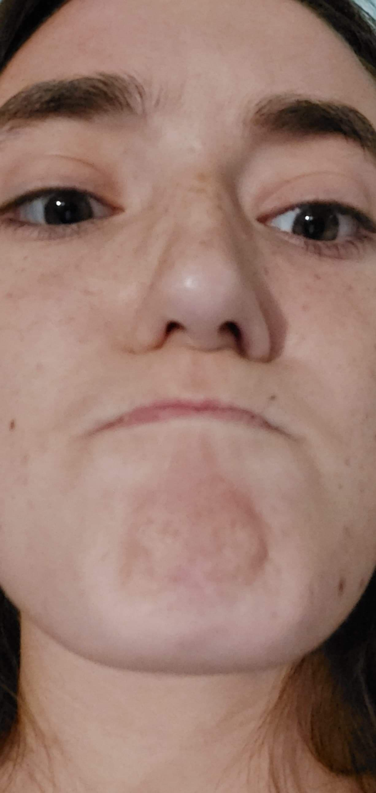
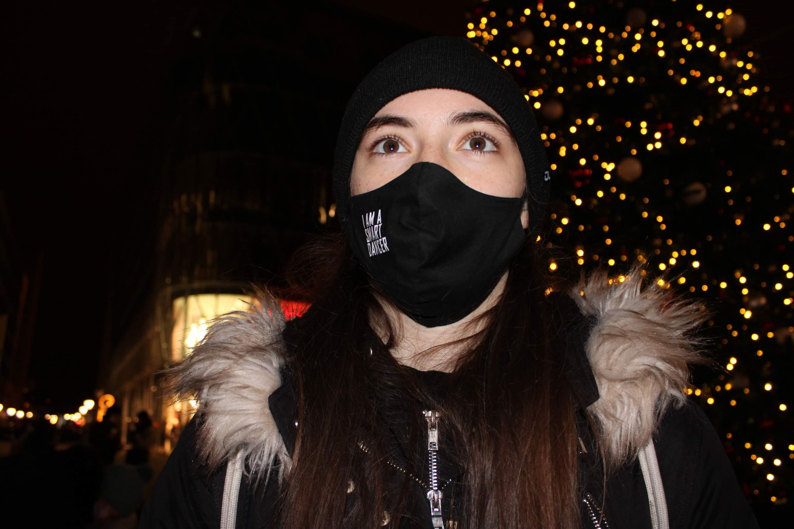
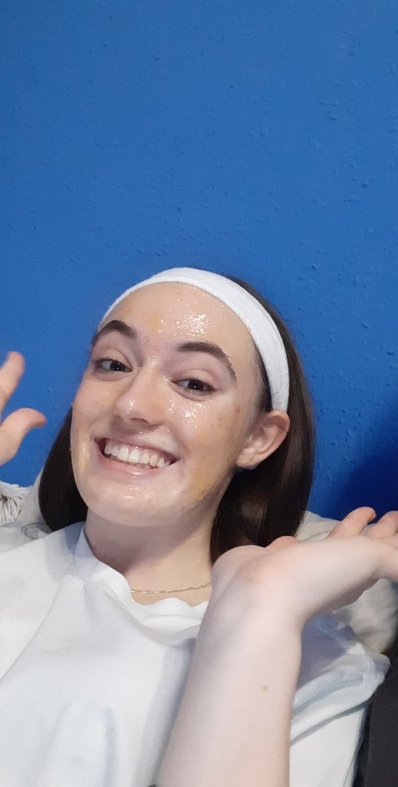

Napi hányszor nyomsz egy Henit?

Az osztozkodás jó, kivétel ha neked kell osztozkodni.

Cuki vagy mindenki szerint magadon kívül?
Cuki vagy mindenki szerint magadon kívül?
Egy 1-től 10-es skálán mennyire vagy seggmániás?
A tánc az egy sport?

Folytasd a szöveget!
Folytasd a szöveget!
Úgy küzdj a harcban mint
~Mulan(Nyomj rá a szövegre)

A romantikus filmek a legjobbak!
A romantikus filmek a legjobbak!

Mennyire szereted a sushit
egy -5-től 5-ös skálán?
Mit gondolsz a balettról?
Mi az a pomelo?